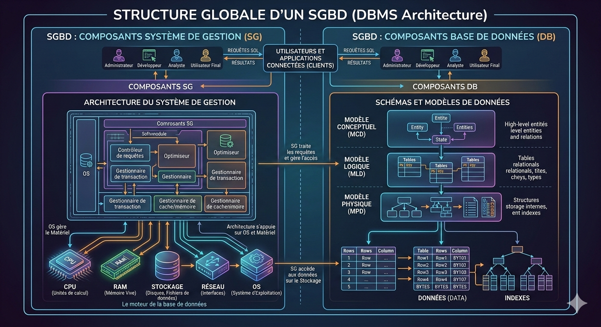
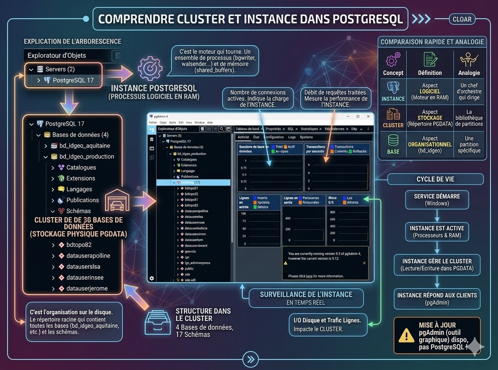
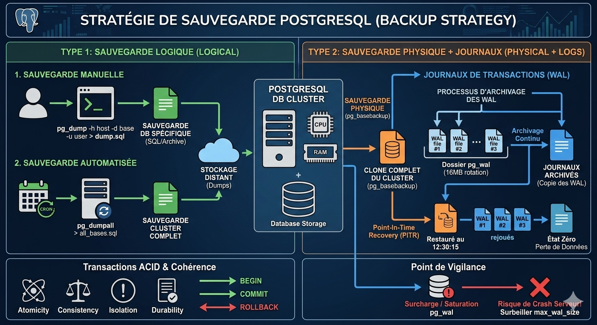
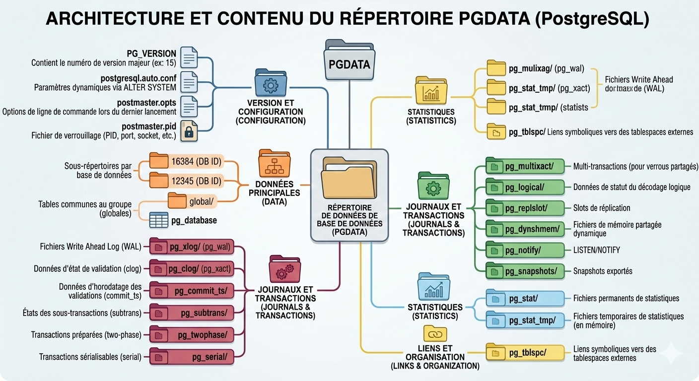
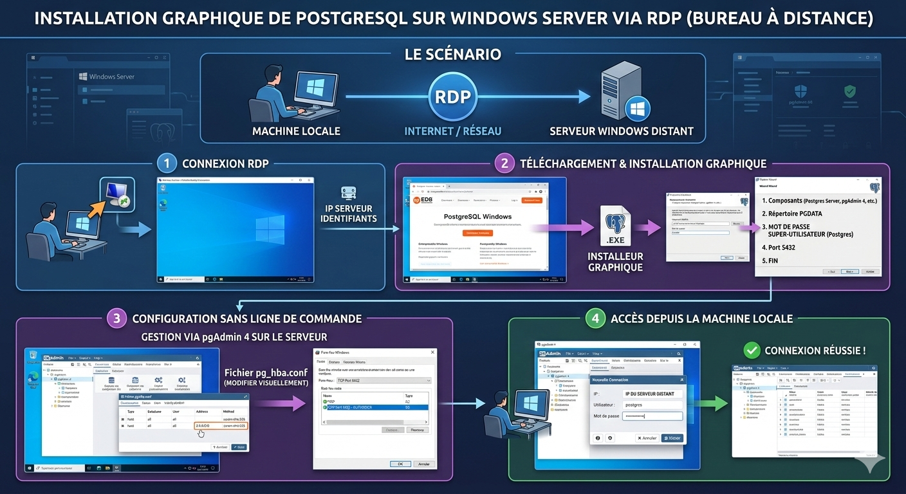
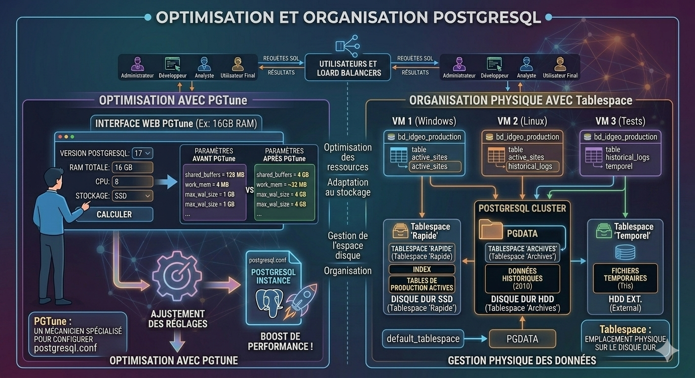

Administration de base de données¶
SOMMAIRE¶
Objectifs de la séquence
Avoir le soucis de la pérennité et de la cohérence des données
1. Concept d'administration : on doit différencier la gestion du serveur de la gestion des bases de données¶

-
Les métiers autour de la base de données vs taille de l'entreprise (cf mouton à 5 pâtes)
-
Système d'exploitation

- Une base de dev et une base de prod
2. Étapes de la Création d'un système de base de données¶
-
Établir les caractéristiques de la base
-
Évaluation du matériel du serveur
-
Installation du logiciel PostgreSQL/ PostGIS (serveur et clients)
-
Créer et ouvrir la base de données
Création d'un groupe de base de données, appelé CLUSTER => il s'agit en premier lieu d'initialiser un emplacement de stockage pour la base de données .
Cluster ou Instance est egale à une groupe de base de donnée.
Les TABLESPACES : L'organisation physique C'est ici que l'administration devient stratégique. Un Tablespace permet de dire à PostgreSQL : "Stocke ces tables précises à cet endroit précis du disque"
- Sauvegarde de la ou des bases de données

a. La Sauvegarde Logique (Le "Cliché") C'est l'extraction de la structure et des données à un instant $T$ sous forme de script SQL ou d'archive propriétaire.Manuel (pg_dump) : Idéal pour sauvegarder une base précise ou une table spécifique. C'est un fichier texte (souvent compressé) contenant les commandes CREATE TABLE et INSERT.Automatisé (Scripts) : Généralement une tâche Cron (Linux) ou un Tâche Planifiée (Windows) qui lance pg_dumpall (pour tout le cluster) chaque nuit.
Avantage : Facile à restaurer sur une version différente de PostgreSQL ou une autre architecture.
Inconvénient : Toute donnée modifiée entre deux sauvegardes (ex: entre 2h du matin et 14h) est perdue si le disque lâche à 14h.
b. La Sauvegarde Physique et les WAL (Le "Film")Pour éviter la perte de données entre deux dumps, on utilise les Write Ahead Logs (WAL). Le concept : Avant d'écrire une donnée dans les fichiers de la base, PostgreSQL l'écrit d'abord dans un journal (WAL). C'est le journal de bord de toutes les transactions.Taille et Rotation : Par défaut à 16 Mo (souvent configuré à 32 Mo ou plus sur de gros serveurs), ils tournent en boucle.Archivage : En copiant ces fichiers au fur et à mesure qu'ils sont remplis vers un stockage distant, on peut faire du Point-In-Time Recovery (PITR). On peut ainsi "rejouer" le film des transactions jusqu'à la seconde précédant un crash.
c. Fiabilité : Les Transactions (ACID)Les transactions sont le bouclier de vos données. Elles garantissent qu'un traitement est soit entièrement validé (COMMIT), soit entièrement annulé (ROLLBACK).Accès concurrents : Grâce au verrouillage, deux utilisateurs ne peuvent pas modifier la même ligne de manière incohérente au même instant.Panne système : Si le serveur s'éteint brutalement pendant une écriture, au redémarrage, PostgreSQL lira les WAL pour finaliser ce qui était validé et annuler ce qui était corrompu.
d. Vigilance : La saturation du disqueC'est le "piège" classique du DBA :Grosse mise à jour : Si vous faites un UPDATE sur 10 millions de lignes, PostgreSQL va générer une quantité massive de WAL très rapidement.Saturation : Si le dossier pg_wal sature le disque, le serveur s'arrête immédiatement par sécurité (car il ne peut plus garantir la cohérence).Solution : Surveiller l'espace disque et configurer correctement max_wal_size et min_wal_size.
-
Créer et gérer les utilisateurs et leur droits d'accès (stratégie de sécurité dédiée)
-
Implémenter la structure de la base
-
Optimiser les performances de la base
3. Architecture et arborescence¶

- Datas
Pour retrouver tout les objets de ta base de données , il se trouve dans le fichier : C:\Program Files\PostgreSQL\17\data\base Chaque objet d'une base ainsi que la base elle meme à un OID qui est un identifant unique .
- Configuration Pour connaitre son adresse ip : https://monip.io/
Installer PostgreSQL sur son serveur

Avant toute modification des fichiers hba et postgresql.conf il faut imeractivement les copiés dans un dossier de sortes que si l'on faisait une mauvaise manipulation on puisse recupérer le fichier
- Binaires
4. Focus sur les Tablespaces¶
5. Le rôle de DBA¶
-
la gestion des droits utilisateurs,
-
la gestion des tablespaces,
-
la gestion de l'espace disque,
-
identifier les tables à suivre,
-
la gestion des sauvegardes
6. Manipulations diverses¶

- Pgtune & modification de la configuration du serveur
PGTUNE¶
PGTune est un outil (généralement utilisé via une interface web) qui aide les administrateurs de bases de données à configurer de manière optimale le fichier postgresql.conf que nous avons vu précédemment.
Imagine que PostgreSQL est un moteur de voiture de course : par défaut, il est réglé pour fonctionner sur n'importe quel petit ordinateur. PGTune agit comme un mécanicien spécialisé qui ajuste les réglages du moteur en fonction de la puissance réelle de ton serveur.
Pourquoi PGTune est-il important ? Comme tu l'as vu dans le fichier de configuration, les valeurs par défaut sont souvent très basses (ex: shared_buffers = 128MB). Voici pourquoi PGTune est crucial :
Optimisation des ressources : Il calcule les valeurs idéales pour la mémoire (shared_buffers, work_mem) en fonction de la RAM totale de ton serveur.
Adaptation au stockage : Il ajuste les paramètres du disque (comme random_page_cost) selon que tu utilises un disque dur classique ou un SSD.
Spécificité de l'usage : Il propose des réglages différents selon que ta base sert à une application web (beaucoup de petites requêtes) ou à du Data Warehousing (grosses analyses de données).
Sécurité et performance du WAL : Il configure les tailles optimales pour les journaux de transaction (max_wal_size) afin d'éviter des écritures disque inutiles.
Comment ça marche concrètement ? Tu te rends sur l'outil et tu renseignes 4 à 5 informations simples :
Version de PostgreSQL .
Type d'OS .
RAM totale du serveur (ex: 8 GB, 16 GB).
Nombre de CPU.
Type de stockage (SSD ou HDD).
Le résultat : PGTune te donne une liste de lignes de configuration. Il te suffit de les copier et de les coller dans ton fichier postgresql.conf sur ton serveur Windows, puis de redémarrer l'instance pour que ton serveur soit boosté.
- Gestion des tablespaces
Un Tablespace dans PostgreSQL est un emplacement physique sur le disque dur où sont stockés les fichiers de données de votre base de données.
Pour bien comprendre, voici une explication simple : par défaut, PostgreSQL stocke tout au même endroit (le répertoire PGDATA). Un tablespace vous permet de dire à PostgreSQL : "Pour cette table précise, n'utilise pas le disque principal, mais utilise ce dossier sur cet autre disque dur."
À quoi ça sert ? (Les 3 avantages majeurs)
Optimisation des performances : Vous pouvez placer les tables très consultées sur un disque ultra-rapide (SSD) et laisser les données historiques ou volumineuses sur un disque plus lent et moins cher (HDD).
Gestion de l'espace disque : Si votre disque principal est presque plein, vous pouvez créer un tablespace sur un nouveau disque dur ajouté au serveur pour continuer à stocker des données.
Organisation : Cela permet de séparer physiquement les données de différents projets ou utilisateurs au sein du même cluster.
Exemple concret
Imaginez que vous gérez des données géographiques très lourdes (comme le schéma ign sur votre image précédente) :
Tablespace "Rapide" (SSD) : Pour les index et les tables de production actives.
Tablespace "Archives" (HDD externe) : Pour les anciennes versions des données de 2010 que vous consultez rarement.
- La Sauvegarde (Exportation) L'objectif est de créer un « fichier dump » (copie conforme) qui permet de recréer la base de données en cas de besoin. PostgreSQL utilise pour cela l'utilitaire pg_dump.
Format Texte (SQL) : Le résultat est un script de commandes SQL lisibles. La restauration se fait ensuite simplement via l'outil psql.
Formats Archives (-Fc ou -Fd) : Ce sont les formats les plus flexibles. Ils sont compressés par défaut et permettent de choisir précisément ce que l'on veut restaurer (et même de le faire en parallèle pour gagner du temps). La restauration nécessite alors l'outil pg_restore.
Cas particulier : pg_dumpall : Cet outil permet de sauvegarder l'intégralité d'un cluster, incluant les bases de données, mais aussi les rôles (utilisateurs) et les tablespaces.
- La Restauration (Importation) La méthode de restauration dépend directement du format du fichier de sauvegarde que vous possédez.
Restauration d'un script SQL : On utilise le programme psql qui va lire et exécuter les commandes du fichier.
Commande type : psql base_de_donnees < fichier_sauvegarde.
Restauration d'un cluster complet : Si vous utilisez une sauvegarde issue de pg_dumpall, vous devez impérativement avoir les droits de superutilisateur pour recréer les rôles et les tablespaces.
Conseil de performance : Après chaque restauration, il est fortement conseillé de lancer la commande ANALYZE pour que le système mette à jour ses statistiques de performance.
- Automatisation via Script et Crontab Pour garantir la sécurité des données, il est courant de planifier ces tâches sous Linux/WSL.
Le Script Bash On crée un script (souvent placé dans /usr/bin/) qui définit les variables essentielles :
DB_USER : L'utilisateur (souvent postgres).
DB_NAME : Le nom de la base.
backup_file : Le chemin où sera stocké le fichier, souvent nommé avec la date du jour pour s'y retrouver.
La Planification (Crontab) On utilise l'outil crontab pour définir la fréquence des sauvegardes.
Exemple : 20 * * * * /usr/bin/script_sauv.sh lancera la sauvegarde à la 20ème minute de chaque heure.
Points de vigilance Utilisateurs existants : Lors d'une restauration, tous les propriétaires des objets de la base doivent déjà exister sur le nouveau serveur, sinon l'opération échouera.
Compatibilité : pg_dump est capable de restaurer des bases vers des versions plus récentes du serveur ou vers des architectures de processeurs différentes.
Tablespaces : Si vous restaurez un cluster complet, assurez-vous que les chemins d'accès aux disques (tablespaces) existent sur la nouvelle machine - Création d'une base et attribution du tablespace
-
Création d'une base de données template
-
Création d'un utilisateur = ! de postgres
-
Création de tables et affectation à un tablespace
-
Création d'indexes et affectation à un tablespace